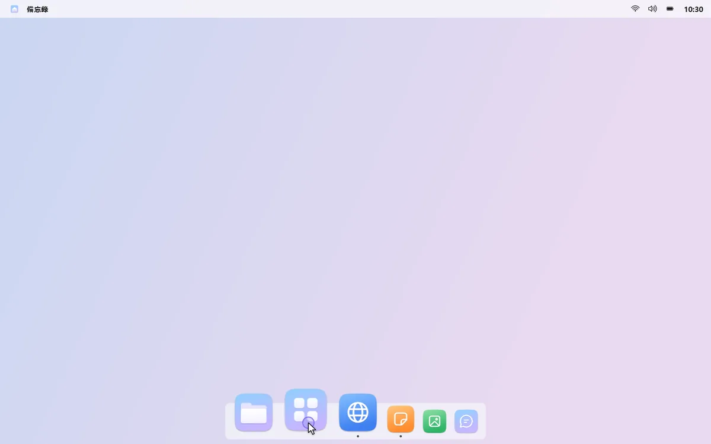
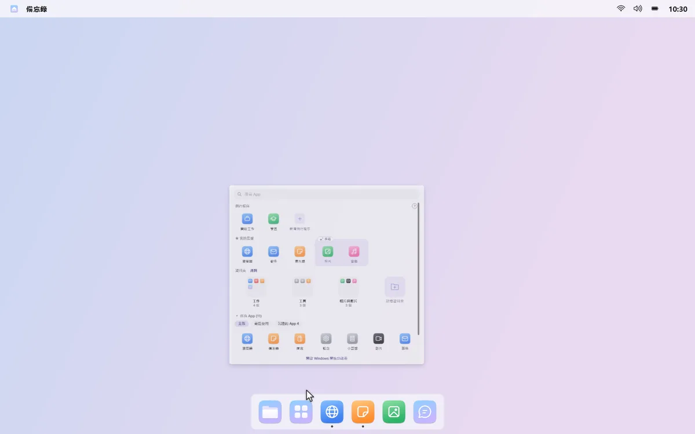
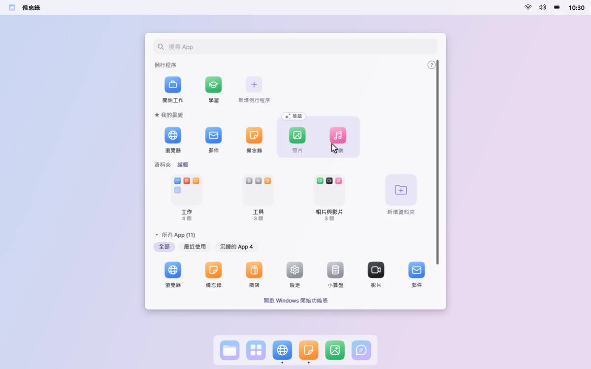
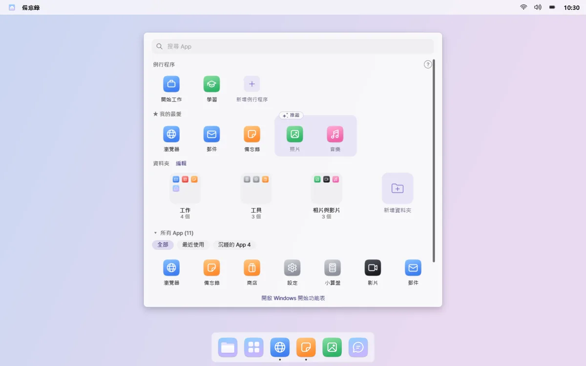
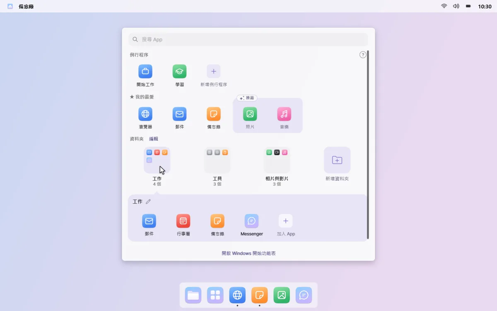
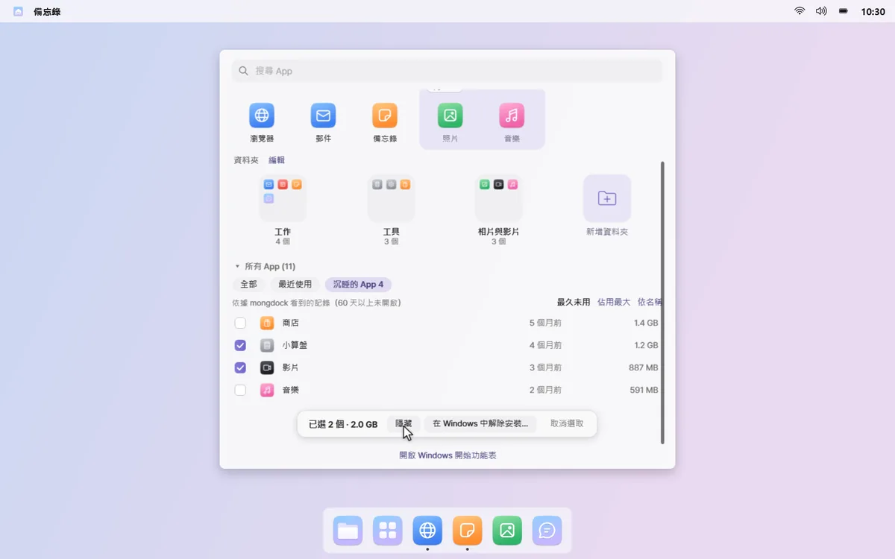

所有應用程式
常用的 App，放在眼前
按一下 Dock 中的「所有應用程式」，畫面中央就會開啟一個面板。我的最愛、只放常用 App 的資料夾和所有 App，都已整理好。
被遺忘的 App · 裝了一次就再也沒開過的 App，越積越多。
01
一打開就能輸入
面板不會蓋住整個畫面，一打開就能在搜尋框輸入。最上面一列的例行程序，按一下就能開啟。



02
我的最愛，再加幾個推薦
把最常開的 App 釘選到我的最愛列。最近常用的 App 會以虛線框推薦出來，按一下 + 即可加入我的最愛。

03
只放常用 App 的資料夾
App 會依工作、溝通、遊戲等分類放進資料夾，每個資料夾只放最近用過的 App。在編輯模式下，按一下就能重新命名資料夾、調整順序。

04
整理沉睡的 App
顯示超過 60 天沒開過的「沉睡的 App」及其占用空間。可以在面板中隱藏，也可以挑幾個交給 Windows 解除安裝。

用於推薦和資料夾的 App 使用紀錄，只留在你的電腦上。在面板空白處按右鍵，關閉「記錄常用 App」，即可停止記錄並清除。 查看隱私權政策
須知
- 解除安裝沉睡的 App 時，會依序開啟每個 App 的 Windows 解除安裝程式。mongdock 本身不會刪除任何東西，無法用這種方式解除安裝的 App 會在清單中標示出來。